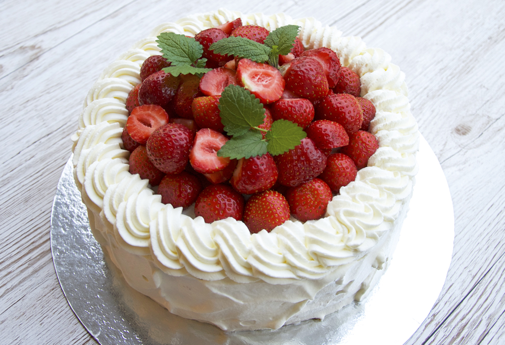
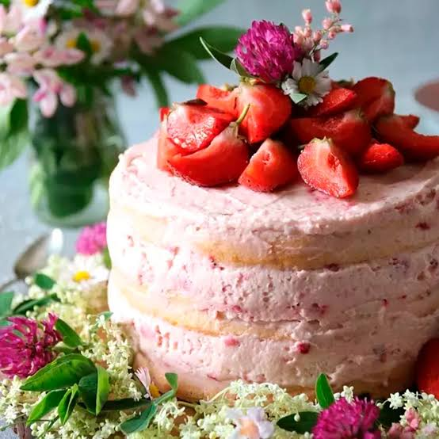
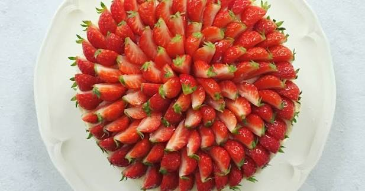

Jordgubbstårta
En klassisk gräddtårta med vanilj, jordgubbar och fluffig grädde.
- 10 port
- 60 min
- Medel
Ingredienser
För 4 portioner
Så här gör du
Serveringsförslag


 Jennys recept
Jennys recept start
Jennys recept
Jennys recept start

En klassisk gräddtårta med vanilj, jordgubbar och fluffig grädde.
För 4 portioner

